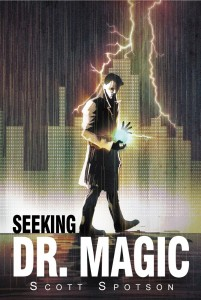

From the journal
Well-Developed Story... 5 Stars
From the original website · 2014-07-03
http://samolteni.blogspot.ca/2014/07/book-review-spotlight-seeking-dr.html
Book Review Spotlight - Seeking Dr. Magic by Scott Spotson
The story opens with Ninjas effortlessly performing stunts on a high-rise building in New York City, only to disappear in front of the large crowd of on-lookers. Former FBI agent, Tony Hetfield is now a detective who is tasked with solving the mystery of the Phantam Ninjas, only to be taken from his office in Chicago and dropped thirty stories off the Morgan Stanley building in New York within a matter of minutes. Hetfield is then caught inches from the ground by Dr. Magic - all is recorded and the media is in a frenzy about it.
Throughout the book, both Dr. Magic and Detective Hetfield reveal more and more "human" characteristics, not just the surface traits initially portrayed in the beginning of the book. Hetfield becomes more likable as a character as he develops a bond with Dr. Magic. Hetfield has a gut feeling that Dr. Magic is not evil, just misunderstood. Dr. Magic realizes that he is just a kid in need of a friend that he can trust.
The only thing that bothered me while reading this was that the ending felt a bit rushed, but not to the point of detracting too much from the story line.
If you are looking for a quick read this summer, "Seeking Dr. Magic" certainly fits the bill!


"Seeking Dr. Magic" by Scott Spotson is an urban detective fantasy that delivers a well-developed story full of suspense and a good amount of "magic".The story opens with Ninjas effortlessly performing stunts on a high-rise building in New York City, only to disappear in front of the large crowd of on-lookers. Former FBI agent, Tony Hetfield is now a detective who is tasked with solving the mystery of the Phantam Ninjas, only to be taken from his office in Chicago and dropped thirty stories off the Morgan Stanley building in New York within a matter of minutes. Hetfield is then caught inches from the ground by Dr. Magic - all is recorded and the media is in a frenzy about it.
Throughout the book, both Dr. Magic and Detective Hetfield reveal more and more "human" characteristics, not just the surface traits initially portrayed in the beginning of the book. Hetfield becomes more likable as a character as he develops a bond with Dr. Magic. Hetfield has a gut feeling that Dr. Magic is not evil, just misunderstood. Dr. Magic realizes that he is just a kid in need of a friend that he can trust.
The only thing that bothered me while reading this was that the ending felt a bit rushed, but not to the point of detracting too much from the story line.
If you are looking for a quick read this summer, "Seeking Dr. Magic" certainly fits the bill!